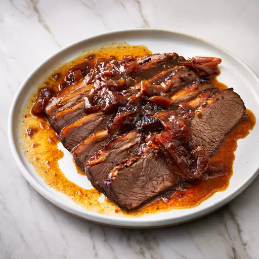

Hanukkah Brisket Recipes

Description
This Hanukkah brisket will literally fall apart in your mouth.
The recipe was given to me by my Jewish friend.
We made it for a work potluck, and it was a hit.
Ingredients
- 1 (4 pound) beef brisket
- 1 large onion, sliced
- 2 (14.5 ounce) cans beef broth
- 2 (15 ounce) cans French onion soup
- 2 (12 fluid ounce) cans or bottles beer
Steps
- Preheat the oven to 350 degrees F (175 degrees C).
- Place a large roasting pan over medium-high heat. Sear brisket, fat-side down first, in the hot pan until browned, about 3 minutes per side. Remove brisket from the pan and set aside.
- Place onion slices into the bottom of the same roasting pan; pour 1 can beef broth, 1 can French onion soup, and 1 can beer over onions. Lay brisket on top; pour remaining beef broth, French onion soup, and beer over brisket. Cover the roasting pan with a lid.
- Bake in the preheated oven for 3 hours. Let brisket stand at room temperature for 30 minutes.
- Remove brisket from the roasting pan and wrap tightly in aluminum foil. Pour pan juices and onion into a food storage container and cover tightly with a lid. Refrigerate brisket and pan juices, 8 hours to overnight.
- The next day, preheat the oven to 350 degrees F (175 degrees C). Pour pan juices and onion into a 9x13-inch baking dish.
- Unwrap brisket, cut away any visible fat, and slice thinly across the grain of the meat. Place brisket slices into pan juices.
- Bake in the preheated oven until pan juices are thickened and meat is hot, about 45 minutes.